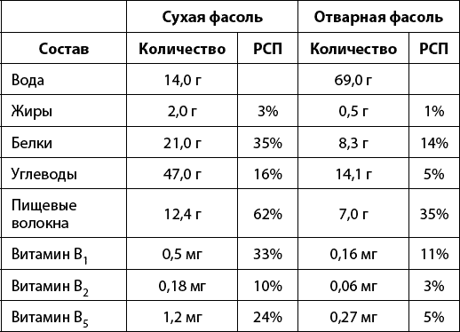
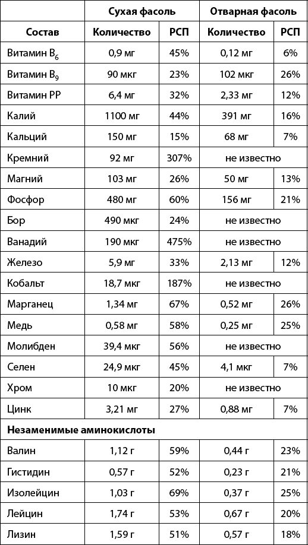
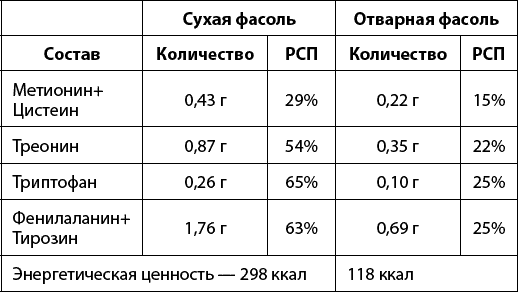

История возделывания фасоли насчитывает более 7000 лет. Родиной фасоли принято считать Южную Америку. Но ее выращивали и в Древнем Риме, и в Древнем Египте. В древних китайских летописях встречаются упоминания о фасоли, относящиеся к 2800 году до н. э.
В Древнем Риме фасоль использовалась не только в качестве продукта питания, но и как косметическое средство. Из нее делали пудру и белила для кожи лица. Считалось, что фасолевая пудра смягчает кожу и разглаживает морщины. Фасоль входила в состав знаменитой маски для лица царицы Клеопатры.
В Европу фасоль была привезена из Америки голландскими и испанскими мореплавателями в XVI веке. А уже из Старого Света фасоль была завезена в Россию, где ее долгое время называли французскими бобами. Сначала фасоль выращивали больше в качестве декоративного кустарника, а как овощная культура она получила распространение лишь в начале XVIII века.
В медицине широко используются створки фасоли. Экстракт и отвар из них обладают сахароснижающим действием. Фасоль обыкновенная входит в растительные сборы, применяемые при диабете.
Многие не любят фасоль, поскольку она вызывает повышенное газообразование. Но от этой проблемы легко избавиться, перед приготовлением замочив фасоль на ночь в растворе соды: 1 ст. л. соды на 1 л воды.
Фасоль богата пуринами, поэтому она противопоказана при подагре.
Мифы
? Фасоль богата витамином С.
В Интернете часто пишут о том, что фасоль богата витамином С. На самом деле фасоль не содержит этого витамина.
? Для вегетарианцев фасоль – полноценная замена мяса.
Существует такая распространенная рекомендация, поскольку фасоль богата железом. Но из растительных продуктов железо практически не усваивается.
? Самая полезная фасоль – белая.
Чем темнее фасоль, тем она полезнее. Самое большое количество антиоксидантов содержится в черной фасоли.
? Фасоль можно есть сырой.
Фасоль содержит ядовитое вещество – феазин, которое разрушается при варке. Сырой фасолью можно отравиться!
Правда
? Фасоль полезна при сахарном диабете.
Фасоль содержит аргинин – вещество, снижающее уровень сахара в крови. Также фасоль богата хромом, который регулирует уровень сахара в крови.
? Фасоль укрепляет память.
Фасоль богата витаминами группы B, которые улучшают работу нервной системы, укрепляют память и повышают работоспособность.
? Фасоль полезна при депрессии.
Фасоль содержит незаменимую аминокислоту триптофан, которая в организме человека синтезируется в серотонин – «гормон радости».
? Фасоль полезна при отеках.
Фасоль обладает мочегонными свойствами, так как содержит калий.
? Фасоль защищает от заболеваний сердца и сосудов.
В фасоли содержится много магния, а этот макроэлемент очень полезен для сердца, он укрепляет его, способствует нормализации сердечного ритма. Также фасоль богата витамином РР, который укрепляет стенки сосудов.
? Фасоль выводит из организма холестерин, токсины и соли тяжелых металлов.
Все дело в том, что всего в 100 г фасоли содержится 35 % РСП пищевых волокон – они абсорбируют холестерин и вредные вещества и выводят их из организма естественным путем.
Из фасоли можно приготовить замечательное и очень полезное грузинское блюдо лобио.
Фасоль замочить на ночь с 1 ст. л. соды. Промыть фасоль и варить 15 минут. Сменить воду и варить еще 45 минут. Затем откинуть фасоль на дуршлаг, чтобы стекла вся жидкость.
Лук нарезать и обжарить до золотистого цвета. Кинзу и чеснок мелко порубить.
Фасоль размять, заправить подсолнечным маслом и солью. Добавить остальные ингредиенты. Перемешать, и лобио готово!